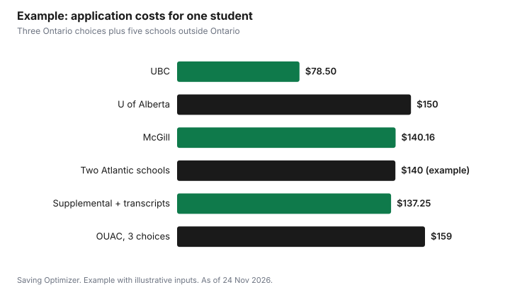

Education · Canada
University Application Fees Outside Ontario

Outside Ontario, each Canadian university charges its own application fee, and for fall 2027 they range from under $80 to about $150 per school. UBC charges $78.50 for Canadian citizens and permanent residents, the University of Alberta charges $150 for new applicants, and McGill charges $140.16, with a second program application free. Add supplemental application fees for some programs and transcript costs, and five out-of-province applications can easily pass $600.
Key takeaways
- UBC (through EducationPlannerBC): $78.50 for Canadian citizens and permanent residents for 2027 entry, paid by credit card.
- University of Alberta: $150 for new applicants, $100 for current or former U of A students. The U of A says it does not grant waivers on request.
- McGill: $140.16, and a second application for the same term and level is free.
- Supplemental fees add up: UBC's B.Com. Personal Profile is $97.25.
- Example: five schools outside Ontario cost about $650 including one supplemental fee and transcripts.
BC, Alberta, Quebec and Atlantic Canada
Ontario applicants are used to OUAC, which charges one base fee for three choices. Other provinces do not work that way. In British Columbia, most public universities take applications through EducationPlannerBC, but each school still sets its own fee. UBC's academic calendar lists $78.50 for Canadian citizens and permanent residents applying for the 2027 sessions, and $173.25 for applicants who will study on a study permit.
In Alberta, the University of Alberta charges $150 for new applicants and $100 for current or previous U of A students, and says it does not grant application fee waivers on request. In Quebec, McGill's undergraduate admissions page lists a $140.16 fee, and a second application for the same term and level costs nothing extra; after that, each extra application is another $140.16. Atlantic universities such as Dalhousie, Memorial, UNB and Acadia each publish their own fee; check the admissions page of each school on your list.
| University | Fee | Notes |
|---|---|---|
| UBC | $78.50 | Via EducationPlannerBC; $173.25 if on a study permit |
| University of Alberta | $150 | $100 for current or former U of A students; no waivers on request |
| McGill | $140.16 | Second application for the same term free |
| OUAC (Ontario, for comparison) | $159 for three choices | $51 for each extra choice |
Fee waivers
Waivers are rarer outside Ontario than many families expect. Some schools waive fees for applicants in financial need, Indigenous applicants or students from specific programs, but others, like the University of Alberta, say plainly that they do not waive fees on request. If cost is a barrier, email the admissions office before you apply and ask whether any waiver exists. Do it early, because waiver requests often have their own deadline.
Transcripts and supplemental costs
Out-of-province schools need your high school transcript. If you are in Ontario, your school or OUAC can usually send grades, but some universities want an official transcript sent directly. Ask your guidance office what it charges, if anything. Supplemental applications cost extra at some faculties: UBC lists $97.25 for the B.Com. Personal Profile and separate fees for programs such as nursing and music. Portfolio and audition programs may add travel.
Deadlines
Deadlines outside Ontario often fall between mid-January and early March for fall entry, with earlier dates for scholarships and some competitive programs. Missing an early scholarship deadline can cost far more than an application fee. Our scholarship deadlines calendar lists the big national awards.
Budget: an example list
An example Ontario student applies to three Ontario universities through OUAC and five schools outside Ontario.

Outside Ontario: UBC $78.50, U of Alberta $150, McGill $140.16, and two Atlantic schools at an example $70 each, plus one $97.25 supplemental profile and $40 of example transcript costs, about $646. OUAC's base fee for the three Ontario choices is $159, so the whole list costs about $805. Trimming one out-of-province school you would not actually attend saves $70 to $150. Our OUAC and Ontario Colleges fee guide covers the Ontario side.
Sources
- UBC Academic Calendar, Application and Administrative Fees (2027S and 2027W: $78.50 Canadian citizens and permanent residents; $173.25 study permit; B.Com. Personal Profile $97.25), checked 24 Nov 2026.
- UBC Undergraduate Admissions, Apply now (EducationPlannerBC; credit card), checked 24 Nov 2026.
- University of Alberta, Admission Requirements – Application Fee ($150 new applicants; $100 current or previous; no waivers on request), checked 24 Nov 2026.
- McGill University Undergraduate Admissions, Apply ($140.16; second application free), checked 24 Nov 2026.
- OUAC fees ($159 for three choices; $51 each additional), as listed in our OUAC guide, checked 1 Oct 2026.
Frequently asked questions
How much does it cost to apply to UBC?
For 2027 entry, UBC lists a $78.50 application fee for Canadian citizens and permanent residents, and $173.25 for applicants who will study on a study permit. Some programs add supplemental fees.
How much is the University of Alberta application fee?
The University of Alberta charges $150 for new applicants and $100 for current or previous U of A students. It says it does not grant fee waivers on request.
How much does McGill charge to apply?
McGill lists $140.16. Once you submit your first application, a second application for the same term and level is free, and each one after that costs another $140.16.
Can I get an application fee waiver outside Ontario?
Sometimes, but it varies by school and some don't offer waivers at all. Email the admissions office early and ask about financial-need or other waivers before you apply.
Is there a central application system outside Ontario?
Not one for all of Canada. BC uses EducationPlannerBC for many public schools, but each university still sets its own fee. Alberta, Quebec and Atlantic schools mostly take applications directly.
Researched and drafted with AI assistance and fact-checked against official Canadian sources. How we create content.
Note: Fees are for fall 2027 entry and can change. Confirm on each university's admissions page. Education only.